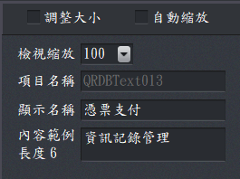

文件內容設計-公用區
此區域可以設定套印項目是否可以自動縮放、修改顯示名稱及內容示例。的設定會影響到本視窗的其他設定，例如「用滑鼠調整大小」打勾時，字串、圖檔都可以用
- 套印項目縮放：
- 調整大小：當調整大小被選取(✓)時，套印項目就可以使用滑鼠直接拖拉套印項目大小時，而「自動縮放」就會被關掉。
- 自動縮放：套印預設為自動縮放，以便完全印出該項目，例如憑票支付因為每個收票人名稱長短不一，套印項目要能自動縮放，才能完全列印出該項目。
- 備註：如果想讓字串在一個可列印的範圍(固定寬度、大小)內置中時，自動縮放就關閉。
- 檢視縮放：設計文件時，可以調整檢視縮放，以便於調整套印項目。
- 項目名稱：系統自動賦予套印項目的名稱，此名稱無法修改。
- 顯示名稱：由使用者依套印項目的名稱進行命名，這個名稱主要是便於使用者識別套印項目，該名稱會用於資料排序、資料處理輸入設定、資料引用、存檔.....設定等地方。
- 內容範例：輸入模擬的資料，方便使用者設定檢視套印內容。
- 長度 0：自動計算內容長度，方便使用者設定檢視套印項目。

公用區